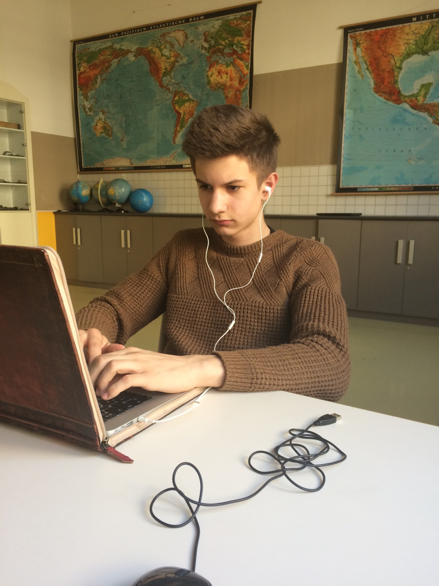
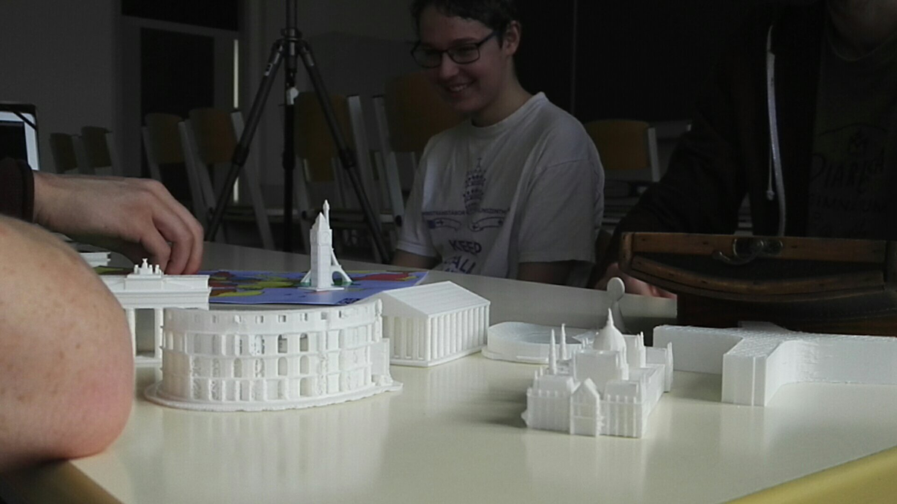

A játékot a 15+ korosztálynak ajánljuk: a tantárgyi követelményekben ekkor tanuljuk Európa regionális földrajzát, amihez projektünk kapcsolódik. A játék segíti a kontinensünkhöz kapcsolódó ismeretanyag elsajátítását, valamint a kooperatív szemlélet mélyebb begyakorlását, amely elengedhetetlen Európa számára (fejlesztési cél tehát a gyakoroltatás és a szemléletformálás). Játékunkban csupa olyan problémát kell megoldani, amelyben Európa nemzetei csak együtt gondolkodva, közösen munkálkodva lehetnek sikeresek (pl. a migránsválság megoldása; a kontinensen szűkös természeti erőforrások kezelése; a környezetvédelem magasabb fokozatra kapcsolása etc.). Projektünkhöz az OFI 10.-es Földrajz tankönyvének Európát érintő fejezetét vettük alapul, ezzel együtt a játék logikájában egy holisztikus és aktualitásokat is követő megközelítés kapott teret. Folyamatosan frissíthető "QR-kódos digitális kártyapaklink" is azt segíti, hogy mindig naprakész legyen a játékunk.

Szerintem ez a játékkészítés egy jó kihívás volt. Én a modellező csoport tagjaként vettem részt a projektben, és nagyon élveztem. Volt lehetőségem fejlődni, tanulni ezen a területen és élveztem hogy egy közhasznú termék kerül ki a kezeim közül. A feladat végzése közben merültek fel ugyan kisebb-nagyobb nehézségek, akadályok, hibák, de ezeket sikerült megoldanunk, ezzel is tanulva valami újat.
Jó volt látni, hogy a projektben el tudtunk mozdulni az iskolában megszokott A4-es papír/docx dokumentum formátumtól és a tananyagról egy teljesen más megközelítésben gondolkodhattunk. Szerintem tantárgy érdeklődéstől függetlenül ez az új formátum mindenki számára üdítően hatott. Terveim szerint a következő tanévben (kis csoportokban) minden diákom vállal majd egy földrajzos tananyagrészt, amelyhez játékot fejleszt, így támogatva az iskolai tanulást.
Tanárként motiváló volt látni, hogy a diákok képesek egy néhány hetes projektet részekre bontani és megvalósítani. Úgy gondolom, hogy egyre több olyan alkalom kell az iskolába, amit a diák nem kötelességnek, hanem kreatív lehetőségnek érez. A megszokott formáktól való eltérés (45 perc; füzet+papír; tanári magyarázat a táblánál) lehetőséget ad arra is, hogy tanárként is tudjunk tanulni diákjainktól. Rengeteg tudás van bennük: merjünk ezzel számolni az iskolai keretek között is!
Örömteli volt számomra, hogy a diákok milyen hatékonyan tudtak együttműködni, mennyi ötletet és kreativitást tudtak belevinni a projektbe. A technikai nehézségeket is mindig ügyesen áthidalták. Biztos vagyok benne, hogy ezen képességeiket a jövőben is kamatoztatni tudják majd.
Nyomtattunk...

Rengeteg dologban lehetne fejleszteni a játékot
Problémák kidolgozásával...
Természeti katasztrófák
Tüntetések
Nagy munkanélküliség
Politikai viszonyok romlása
Minden játékos egy-egy miniszter szerepét tölti be
Emberi erőforrások miniszter
Kereskedelmi miniszter
Vízügyi miniszter
Oktatási miniszter
És még sok más...
Egészségügy, turizmus, közbiztonság, mezőgazdaság, energia
Épületek tech-treeje...
Minden miniszternek lehetne saját igazgatósága, bővíthető épülete
A játékos szerepét jelölő korongokat is nyomtathatnánk
A táblát bővíthetnénk 3D-s hegyekkel
Illetve további látványosságokkal
Rapkay Bence •
Tomka Bence •
Kormos Zoltán •
Wochna András •
Göncz Bertalan •
Szalay Balázs •
Berky Bence •
Fórián-Szabó Máté •
Szokody Márton •
Gelley Koppány •
Schiller Gábor •
Iváncsics Márkus •
Kiss Gergely •
Maróth Márton •
Vannay-Skody Benedek •
Albitre Andeol •
Tomka Botond •
Fábián Ferenc